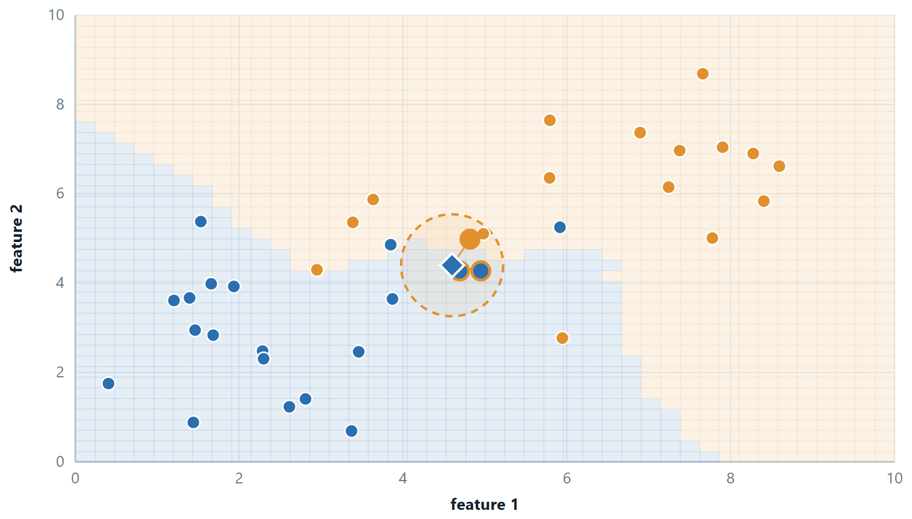

Chapter 9: k-Nearest Neighbours¶
Every classifier so far has built a model from the training data and then thrown the data away. The k-nearest-neighbour classifier does the opposite: there is no training step at all, and a new example is classified by looking up the most similar examples already stored. It is the simplest classifier to describe, a useful baseline, and a clear illustration of the bias-variance trade-off and of why feature scaling matters.
9.1 k-nearest neighbours¶
To classify something new, look at the \(k\) training examples closest to it and take a vote. There is no training step at all: the model is the dataset. It is called a lazy or instance-based learner, and it postpones every calculation to prediction time.

| \(k\) | Boundary | Bias | Variance | Failure mode |
|---|---|---|---|---|
| 1 | jagged, follows every point | low | high | a single mislabelled point creates a whole wrong region |
| \(\sqrt{m}\), roughly | reasonable | moderate | moderate | the usual starting guess, then tuned by cross-validation |
| \(m\) | none — one flat prediction | maximal | zero | always predicts the majority class |
Three things k-NN insists on
Scaling, because a distance is a sum over features and the largest-numbered feature otherwise decides every neighbour. An odd \(k\) for two classes, so a vote cannot tie. And a modest number of features: in high dimensions all pairwise distances converge towards each other, so “nearest” stops meaning anything — the curse of dimensionality hurts k-NN more than any other algorithm in this course.
Variants worth knowing: distance-weighted voting, where a neighbour's vote is divided by its distance so that close neighbours count more; and k-NN regression, which averages the neighbours' values instead of voting. The cost is \(O(\text{mn})\) per query, which is why large deployments use a k-d tree or a ball tree to avoid comparing against every point.
# k-NN: no training, so all the cost is in predict()
from sklearn.neighbors import KNeighborsClassifier
from sklearn.model_selection import cross_val_score
for k in [1, 3, 5, 11, 21]:
pipe = make_pipeline(StandardScaler(), KNeighborsClassifier(n_neighbors=k))
print(k, cross_val_score(pipe, X_tr, y_tr, cv=5).mean().round(3))
# run it once WITHOUT the scaler to see the whole of Unit 2 in one number
print(cross_val_score(KNeighborsClassifier(5), X_tr, y_tr, cv=5).mean())
Definition: Getting boolean features into a distance
k-NN needs a numeric vector, because it computes a distance. Boolean attributes are made numeric by binarisation: True \(\to 1\), False \(\to 0\), one column each. The class label is not binarised — it is what is being predicted.
Two things follow, and both are worth stating in an answer. All columns are then on the same 0/1 scale, so no further scaling is needed. And on 0/1 vectors the squared Euclidean distance is exactly the number of positions that differ, so \(d = \sqrt{\text{mismatches}}\) — the Hamming distance under a square root. Ranking by Euclidean distance and ranking by Hamming distance therefore give the same neighbours.
Example 9.1: Three boolean toppings
Problem. Five pizzas were recorded as liked or not, described by Pepperoni, Pineapple and Pickled-onion. Classify \(\langle \text{False}\), True, \(\text{True}\rangle\) with \(k = 3\).
Step 1 — binarise
| Pizza | Pepperoni | Pineapple | Pickled-onion | Liked |
|---|---|---|---|---|
| P1 | 1 | 1 | 1 | No |
| P2 | 1 | 0 | 0 | Yes |
| P3 | 0 | 1 | 1 | No |
| P4 | 0 | 1 | 0 | Yes |
| P5 | 1 | 0 | 0 | Yes |
| query | 0 | 1 | 1 | ? |
Step 2 — count the mismatches
| Pizza | Positions that differ | Distance | Liked |
|---|---|---|---|
| P1 | 1 (pepperoni) | \(\sqrt{1} = 1.0000\) | No |
| P2 | 3 | \(\sqrt{3} = 1.7321\) | Yes |
| P3 | 0 | 0.0000 | No |
| P4 | 1 (pickled-onion) | \(\sqrt{1} = 1.0000\) | Yes |
| P5 | 3 | \(\sqrt{3} = 1.7321\) | Yes |
Step 3 — vote
The three nearest are P3 (0.0000, No), P1 (1.0000, No) and P4 (1.0000, Yes). No 2, Yes \(1 \to\) not liked.
Two remarks the examiner is looking for. P3 is an exact match at distance 0. And at \(k = 5\) the vote becomes Yes 3, No 2 and the answer flips — which is why \(k\) is chosen by validation, why it is kept odd, and why distance-weighted voting (weight 1/d) is often preferred, since it would let the exact match dominate.
Answer. Neighbours \(P3, P1, P4 \to\) not liked
9.2 Further topics¶
Distance measures for k-NN¶
"Nearest" means nearest under some distance, and the choice is part of the model. For two vectors \(\mathbf{x}\) and \(\mathbf{x}'\) with \(n\) features, the family used most often is
the Minkowski distance of order \(p\). For \(p = 2\) it is the Euclidean distance, the straight-line distance and the usual default; for \(p = 1\) it is the Manhattan (city-block) distance, the sum of the absolute differences; and as \(p\) grows it approaches the Chebyshev distance, the single largest coordinate gap. For two points whose coordinates differ by \(3\), \(4\) and \(0\), for instance, the distances are \(\sqrt{9 + 16 + 0} = 5\) (Euclidean), \(3 + 4 + 0 = 7\) (Manhattan) and \(4\) (Chebyshev). Squaring makes the Euclidean distance sensitive to one large difference, while the Manhattan distance is more forgiving of it. For yes/no or categorical features, the Hamming distance simply counts the positions at which two vectors differ. The distances are met again, with the cosine measure, in the unit on clustering.
None of these choices can compensate for features on different scales, and which distance ranks the neighbours best is an empirical matter that can be settled by cross-validation like the choice of \(k\).
Weighted votes and k-NN regression¶
Let \(N_{k}(\mathbf{q})\) be the \(k\) training examples nearest to the query \(\mathbf{q}\), and give neighbour \(i\) the weight \(w_{i} = 1/d(\mathbf{q}, \mathbf{x}_{i})\), or \(1/d^{2}\) for a steeper fall-off. In classification the weights of each class are added and the class with the larger total wins,
and with \(w_{i} = 1\) this is the plain majority vote. In regression the prediction is the weighted mean of the neighbours' targets,
which is the plain average when all weights are 1. If the query coincides with a training point, \(d = 0\) and the weight is undefined; the usual convention is to return that point's label or value directly.
Ties, and scaling done properly¶
Ties arise in two ways. The vote itself can tie, which an odd \(k\) prevents for two classes but not for three or more; the remedies are to let the nearer neighbours decide, to use distance weights, or to reduce \(k\) by one. The distances can also tie at the \(k\)-th place, so that there are more than \(k\) candidates for the last place; either all of the tied points are admitted or a fixed rule (such as the order of the rows) breaks the tie. A query that lies exactly midway between two classes, as in the exercise below, is tied however the votes are counted, and the correct reply is that the data do not decide it.
Scaling is carried out in one of two standard ways. Min-max scaling maps a feature onto \([0, 1]\),
and standardisation subtracts the mean and divides by the standard deviation, \(x' = (x - \mu)/\sigma\). In both, the constants are computed on the training set only, and the same constants are then applied to every new query; scaling a query with its own minimum and maximum, or letting test data into the statistics, gives a distance that means nothing. Binary 0/1 features need no scaling.
9.3 Worked examples¶
The examples below work through the calculations of this chapter in full. Try each one on paper before reading the steps.
The examples below fix the details that decide a k-NN answer: the value of \(k\), whether the vote is weighted, whether the features are on one scale, and what changes when the target is a number.
Example 9.2: The same point, three values of \(k\)
Problem. Six training points are given with their classes.
| Point | P1 | P2 | P3 | P4 | P5 | P6 |
|---|---|---|---|---|---|---|
| \(x_1\) | 4 | 3 | 5 | 2 | 8 | 7 |
| \(x_2\) | 3 | 3 | 5 | 4 | 8 | 2 |
| Class | B | A | A | A | B | B |
Classify \(Q = (4, 4)\) with \(k = 1\), \(k = 3\) and \(k = 5\) using Euclidean distance, and say what happens at \(k = 6\).
Step 1 — the distances from \(Q = (4, 4)\)
For P1: \(d = \sqrt{(4-4)^{2} + (4-3)^{2}} = \sqrt{1} = 1.000\). For P2: \(d = \sqrt{1 + 1} = \sqrt{2} = 1.414\). All six, sorted:
| Rank | Point | \((\Delta x_{1})^{2} + (\Delta x_{2})^{2}\) | Distance | Class |
|---|---|---|---|---|
| 1 | P1 (4, 3) | \(0 + 1 = 1\) | 1.000 | B |
| 2 | P2 (3, 3) | \(1 + 1 = 2\) | 1.414 | A |
| 3 | P3 (5, 5) | \(1 + 1 = 2\) | 1.414 | A |
| 4 | P4 (2, 4) | \(4 + 0 = 4\) | 2.000 | A |
| 5 | P6 (7, 2) | \(9 + 4 = 13\) | 3.606 | B |
| 6 | P5 (8, 8) | \(16 + 16 = 32\) | 5.657 | B |
P2 and P3 are equally far away; both are class A, so their order does not affect any answer.
Step 2 — vote for each \(k\)
\(k = 1\): the nearest is P1, class B.
\(k = 3\): P1 (B), P2 (A), P3 (A) give A 2, B 1, class A.
\(k = 5\): P1 (B), P2 (A), P3 (A), P4 (A), P6 (B) give A 3, B 2, class A.
\(k = 6\): all six points vote, A 3 and B 3, a dead tie that has nothing to do with where \(Q\) is.
Answer. \(k = 1\) gives B; \(k = 3\) and \(k = 5\) give A; \(k = 6\) gives a tie.
Comment. P1 is a lone B sitting among A's, and may be noise or a mislabelled record. With \(k = 1\) the model trusts it completely (high variance, overfitting). Raising \(k\) lets the surrounding A's outvote it. If \(k\) grows to the size of the whole set, the prediction is simply the overall majority wherever \(Q\) lies (high bias, underfitting). A sensible starting point is \(k \approx \sqrt{m}\), rounded to an odd number, and then tuned by cross-validation.
Example 9.3: Plain majority against a distance-weighted vote
Problem. A clinic records two scaled measurements for eight patients and whether each turned out to be diabetic.
| Patient | P1 | P2 | P3 | P4 | P5 | P6 | P7 | P8 |
|---|---|---|---|---|---|---|---|---|
| \(x_1\) (glucose index) | 5 | 4 | 7 | 5 | 2 | 8 | 1 | 5 |
| \(x_2\) (BMI index) | 4 | 6 | 5 | 8 | 4 | 8 | 5 | 10 |
| Diabetic | Yes | No | Yes | No | No | Yes | No | Yes |
A new patient has \(Q = (5, 5)\). Classify with (a) \(k = 3\), (b) \(k = 5\), and (c) \(k = 5\) with each vote weighted by \(1/d^{2}\).
Step 1 — squared distances
Work with \(d^{2}\) and take the root only for display. For P1: \(d^{2} = (5-5)^{2} + (5-4)^{2} = 1\).
| Patient | \(d^{2}\) | \(d\) | Diabetic |
|---|---|---|---|
| P1 (5, 4) | 1 | 1.000 | Yes |
| P2 (4, 6) | 2 | 1.414 | No |
| P3 (7, 5) | 4 | 2.000 | Yes |
| P4 (5, 8) | 9 | 3.000 | No |
| P5 (2, 4) | 10 | 3.162 | No |
| P7 (1, 5) | 16 | 4.000 | No |
| P6 (8, 8) | 18 | 4.243 | Yes |
| P8 (5, 10) | 25 | 5.000 | Yes |
Step 2 — (a) \(k = 3\)
The three nearest are P1 (Yes), P2 (No), P3 (Yes): Yes 2, No 1, so Yes.
Step 3 — (b) \(k = 5\)
Add P4 (No) and P5 (No): Yes 2, No 3, so No. The two extra neighbours were both No and flipped the result.
Step 4 — (c) \(k = 5\) weighted by \(1/d^{2}\)
| Neighbour | Class | \(d^{2}\) | Weight \(1/d^{2}\) |
|---|---|---|---|
| P1 | Yes | 1 | 1.0000 |
| P2 | No | 2 | 0.5000 |
| P3 | Yes | 4 | 0.2500 |
| P4 | No | 9 | 0.1111 |
| P5 | No | 10 | 0.1000 |
\(\text{Yes} = 1.0000 + 0.2500 = 1.2500, \qquad \text{No} = 0.5000 + 0.1111 + 0.1000 = 0.7111\)
\(1.2500 > 0.7111\), so the weighted vote says Yes.
Answer. (a) Yes (2 votes to 1). (b) No (3 votes to 2). (c) Yes (weight 1.2500 against 0.7111).
Comment. In (b) the three No neighbours are at distances 1.414, 3.000 and 3.162, while the two Yes neighbours are at 1.000 and 2.000. A plain majority throws that information away; a neighbour three times farther off still gets one whole vote. Weighting restores it: the very close P1 alone (weight 1.0) outweighs the two distant No votes together (0.211). Weighting also makes exact ties in the vote practically impossible.
Example 9.4: Why the features must be rescaled first
Problem. A shop records four customers.
| Customer | Age (years) | Salary (thousand rupees) | Segment |
|---|---|---|---|
| C1 | 20 | 500 | A |
| C2 | 25 | 800 | A |
| C3 | 60 | 520 | B |
| C4 | 55 | 900 | B |
A new customer is 24 years old and earns 890 thousand. (a) Classify with \(k = 1\) and \(k = 3\) from the raw numbers. (b) Apply min-max scaling and classify again. (c) Which answer is to be trusted?
Step 1 — (a) raw distances from \(Q = (24, 890)\)
For C1: \(d^{2} = (24-20)^{2} + (890-500)^{2} = 16 + 152100 = 152116\), so \(d = 390.02\).
| Customer | \(\Delta\)age | \(\Delta\)salary | \(d^{2}\) | \(d\) | Segment |
|---|---|---|---|---|---|
| C4 | \(-31\) | \(-10\) | \(961 + 100 = 1061\) | 32.57 | B |
| C2 | \(-1\) | 90 | \(1 + 8100 = 8101\) | 90.01 | A |
| C3 | \(-36\) | 370 | \(1296 + 136900 = 138196\) | 371.75 | B |
| C1 | 4 | 390 | \(16 + 152100 = 152116\) | 390.02 | A |
\(k = 1\): C4, segment B. \(k = 3\): C4 (B), C2 (A), C3 (B), segment B.
The result deserves suspicion. C4 is 55 years old and the query is 24, a gap of 31 years, yet C4 is the nearest customer. In its \(d^{2}\) the age term contributes 961 and the salary term only 100; across the table, salary differences are in the hundreds and age differences at most 36, so salary drowns age.
Step 2 — (b) min-max scaling
\(x' = \dfrac{x - \min}{\max - \min}\), with Age: min 20, max 60, range 40, and Salary: min 500, max 900, range 400. The query is scaled with the training minimum and maximum. For C2: age \((25-20)/40 = 0.125\), salary \((800-500)/400 = 0.750\).
| Age | Salary | |
|---|---|---|
| C1 | 0.000 | 0.000 |
| C2 | 0.125 | 0.750 |
| C3 | 1.000 | 0.050 |
| C4 | 0.875 | 1.000 |
| Q | 0.100 | 0.975 |
For C2: \(d^{2} = (0.100 - 0.125)^{2} + (0.975 - 0.750)^{2} = 0.000625 + 0.050625 = 0.051250\), so \(d = 0.2264\). In full:
| Customer | \(d^{2}\) | \(d\) | Segment |
|---|---|---|---|
| C2 | 0.051250 | 0.2264 | A |
| C4 | \(0.600625 + 0.000625 = 0.601250\) | 0.7754 | B |
| C1 | \(0.010000 + 0.950625 = 0.960625\) | 0.9801 | A |
| C3 | \(0.810000 + 0.855625 = 1.665625\) | 1.2906 | B |
\(k = 1\): C2, segment A. \(k = 3\): C2 (A), C4 (B), C1 (A), segment A.
Step 3 — (c) which to trust
The query is young with a high salary. C2 is 25 with 800: young, high salary, segment A. C4 is 55 with 900. Common sense, and the scaled calculation, say C2 is the better match.
Answer. Raw numbers give B for both \(k\); after scaling both give A. Trust the scaled answer, segment A.
Comment. Standardising (subtracting the mean and dividing by the population standard deviation: means 40 and 680, standard deviations 17.68 and 173.78) gives the same neighbours in the same order, C2, C4, C1, C3, so the conclusion does not depend on which of the two scalings is used. k-NN has no idea what a year or a rupee is; it sees only numbers, and a column with bigger numbers silently wins. Compute the scaling constants on the training set and apply the same constants to every query.
Example 9.5: k-NN for a number: Manhattan distance and weighting
Problem. Five houses have recently been sold.
| House | Size (100 sq ft) | Bedrooms | Price (lakh) |
|---|---|---|---|
| H1 | 10 | 2 | 30 |
| H2 | 12 | 3 | 38 |
| H3 | 15 | 3 | 45 |
| H4 | 20 | 4 | 60 |
| H5 | 22 | 4 | 66 |
Estimate the price of a house of size 14 with 3 bedrooms by k-NN regression with \(k = 3\) and the Manhattan distance, then refine the estimate by weighting each neighbour by \(1/d\).
Step 1 — Manhattan distances from \(Q = (14, 3)\)
\(d = |14 - \text{size}| + |3 - \text{bedrooms}|\). For H1: \(|14 - 10| + |3 - 2| = 4 + 1 = 5\).
| House | \(\lvert\Delta\text{size}\rvert\) | \(\lvert\Delta\text{bedrooms}\rvert\) | \(d\) | Price |
|---|---|---|---|---|
| H3 | 1 | 0 | 1 | 45 |
| H2 | 2 | 0 | 2 | 38 |
| H1 | 4 | 1 | 5 | 30 |
| H4 | 6 | 1 | 7 | 60 |
| H5 | 8 | 1 | 9 | 66 |
Step 2 — the unweighted average of the three nearest
The nearest three are H3, H2 and H1. For regression the neighbours' values are averaged instead of voted on:
\(\hat{y} = \dfrac{45 + 38 + 30}{3} = \dfrac{113}{3} = 37.67 \text{ lakh}\)
Step 3 — weighting by \(1/d\)
The weights are \(w_{3} = 1/1 = 1.000\), \(w_{2} = 1/2 = 0.500\) and \(w_{1} = 1/5 = 0.200\), so
\(\hat{y} = \dfrac{1(45) + 0.5(38) + 0.2(30)}{1 + 0.5 + 0.2} = \dfrac{45 + 19 + 6}{1.7} = \dfrac{70}{1.7} = 41.18 \text{ lakh}\)
Answer. The unweighted estimate is 37.67 lakh and the weighted estimate is 41.18 lakh.
Comment. The weighted estimate is higher because H3, the most similar house, now dominates the average. Here the Manhattan and Euclidean distances rank the five houses in the same order, but they need not: Manhattan adds the differences without squaring them, so one large difference counts for less. Size is measured in hundreds and bedrooms in single digits, so a real model would scale both columns first.
9.4 Common mistakes to avoid¶
Each of the following is a mistake that costs marks in an examination or accuracy in practice.
- Do not run k-NN, SVM or a neural network on unscaled features.
- Do not use an even \(k\) in two-class k-NN.
9.5 Summary¶
After working through this chapter you should be able to do the following.
- Classify by hand with k-NN, describe how \(k\) trades bias against variance, and name the three conditions it insists on — scaling, an odd \(k\), and not too many dimensions.
9.6 Exercises¶
-
Training points \((1,1) \to A\), \((2,2) \to A\), \((4,4) \to B\), \((5,5) \to B\). Classify \((3,3)\) with \(k = 1\) and with \(k = 3\), and explain the tie.
Answer
The distances from \((3,3)\) are \(\sqrt{2} = 1.414\) to both \((2,2)\) and \((4,4)\), and \(\sqrt{8} = 2.828\) to both \((1,1)\) and \((5,5)\). The query sits exactly midway between the two classes, and the data are symmetric about it.
\(k = 1\): the nearest neighbours are \((2,2)\), class A, and \((4,4)\), class B, at exactly the same distance. Neither is nearer, so the data do not decide the class; a program would choose whichever it meets first, which is an accident of row order.
\(k = 3\): the two nearest points are \((2,2)\) (A) and \((4,4)\) (B), and the third place is again a tie between \((1,1)\) (A) and \((5,5)\) (B). The vote is A 2, B 1 or A 1, B 2 depending on the tie-break, so it does not settle the question either. Weighting the votes by \(1/d\) does not help: A receives \(1/\sqrt{2} + 1/\sqrt{8}\) and so does B.
A tie of this kind is a property of the geometry and not a flaw in the method; the honest answer is that the query is undecided. In practice one would prefer a \(k\) that does not cut through a group of equidistant points, or break the tie by a stated rule such as choosing the class with the larger prior.
-
Five points and a query \(q = (5, 5)\) are given.
Point \((x_1, x_2)\) Class A (4, 5) Red B (6, 6) Blue C (5, 7) Blue D (1, 2) Red E (7, 3) Red Classify \(q\) for \(k = 1\) and \(k = 3\) using Euclidean distance.
Answer
Squared distances from \((5,5)\): A \(1 + 0 = 1\); B \(1 + 1 = 2\); C \(0 + 4 = 4\); E \(4 + 4 = 8\); D \(16 + 9 = 25\). The distances are 1.000, 1.414, 2.000, 2.828 and 5.000.
\(k = 1\): the nearest is A (1.000), class Red.
\(k = 3\): the nearest three are A (Red), B (Blue), C (Blue), so Blue 2 and Red 1, class Blue.
The answer changes with \(k\), which is why \(k\) is a hyper-parameter to be chosen by validation.
-
The points \(A(1,2)\), \(B(2,3)\) and \(F(2,1)\) are of class Black and \(C(3,3)\), \(D(6,5)\) and \(E(7,8)\) are of class White. Classify \(q = (3,4)\) with the Euclidean distance for (a) \(k = 1\) and (b) \(k = 3\), showing the distances and the votes.
Answer
Squared distances from \((3,4)\): C \(0 + 1 = 1\); B \(1 + 1 = 2\); A \(4 + 4 = 8\); D \(9 + 1 = 10\); F \(1 + 9 = 10\); E \(16 + 16 = 32\). The distances are C 1.00, B 1.41, A 2.83, D 3.16, F 3.16, E 5.66.
(a) \(k = 1\): the nearest is C, so White.
(b) \(k = 3\): C (White), B (Black), A (Black) give Black 2, White 1, so Black. (D and F tie for fourth place but lie outside the three.)
-
A clothing company records the size worn by six past customers.
Customer A B C D E F Height (cm) 158 158 163 165 168 170 Weight (kg) 58 59 61 61 62 68 Size M M M L L L Predict the size of a new customer of height 161 cm and weight 61 kg by k-NN with \(k = 3\) and Euclidean distance.
Answer
Squared distances from \((161, 61)\): A \(9 + 9 = 18\); B \(9 + 4 = 13\); C \(4 + 0 = 4\); D \(16 + 0 = 16\); E \(49 + 1 = 50\); F \(81 + 49 = 130\). The distances are A 4.243, B 3.606, C 2.000, D 4.000, E 7.071, F 11.402.
The nearest three are C (2.000, M), B (3.606, M) and D (4.000, L): M 2, L 1, so the predicted size is M. Customer D, a size L, is among the three nearest, which shows that k-NN needs a majority and not unanimity. With \(k = 2\) there would have been a tie, which is one reason for an odd \(k\).
-
A laboratory classifies patients as High or Low risk from glucose (\(x_1\)) and BMI (\(x_2\)).
Patient Glucose BMI Risk P1 100 18 Low P2 110 22 Low P3 105 25 Low P4 135 32 High P5 150 35 High A new patient has glucose 130 and BMI 28. (a) Classify with \(k = 3\) and the raw Euclidean distance. (b) Repeat after min-max scaling of both features, using the training minimum and maximum. Comment.
Answer
(a) Squared distances from \((130, 28)\): P4 \(25 + 16 = 41\); P2 \(400 + 36 = 436\); P5 \(400 + 49 = 449\); P3 \(625 + 9 = 634\); P1 \(900 + 100 = 1000\). The distances are 6.40, 20.88, 21.19, 25.18 and 31.62. The nearest three are P4 (High), P2 (Low) and P5 (High): High 2, Low 1, so High.
(b) Glucose runs from 100 to 150 (range 50) and BMI from 18 to 35 (range 17). The query becomes \((0.600, 0.588)\) and the patients \((0, 0)\), \((0.2, 0.235)\), \((0.1, 0.412)\), \((0.7, 0.824)\), \((1, 1)\). The distances are P4 0.256 (High), P3 0.530 (Low), P2 0.533 (Low), P5 0.574 (High), P1 0.840 (Low). The nearest three are P4, P3 and P2: Low 2, High 1, so Low.
The prediction flips. In raw units the glucose gaps (tens) dwarf the BMI gaps (single digits), and P5 sneaks into the top three on its glucose alone. After scaling both features carry equal weight. The scaled answer is the one to trust, though the margin is small (P5 at 0.574 is only just outside), so with so few patients the answer is fragile whichever scaling is used.
-
Calculate the Euclidean and the Manhattan distance between \(p_1 = (2, 4, 6)\) and \(p_2 = (5, 8, 6)\).
Answer
The coordinate differences are 3, 4 and 0. Euclidean: \(\sqrt{9 + 16 + 0} = \sqrt{25} = 5\). Manhattan: \(3 + 4 + 0 = 7\). The Euclidean distance is never larger than the Manhattan distance, which is a useful check on the arithmetic.
-
Eight students have the following hours of study, attendance and exam score.
Student S1 S2 S3 S4 S5 S6 S7 S8 Hours 2 3 5 6 8 9 4 7 Attendance (%) 60 70 75 80 85 90 65 95 Score 40 50 62 70 82 88 55 78 Predict the score of a student with 6 hours and 82% attendance by k-NN regression with (a) \(k = 3\), (b) \(k = 5\), and (c) \(k = 3\) with \(1/d\) weights. Which feature dominates the distance, and why does that matter?
Answer
Squared distances from \((6, 82)\): S4 \(0 + 4 = 4\); S5 \(4 + 9 = 13\); S3 \(1 + 49 = 50\); S6 \(9 + 64 = 73\); S2 \(9 + 144 = 153\); S8 \(1 + 169 = 170\); S7 \(4 + 289 = 293\); S1 \(16 + 484 = 500\). The distances are 2.00, 3.61, 7.07, 8.54, 12.37, 13.04, 17.12, 22.36.
(a) S4, S5, S3: \((70 + 82 + 62)/3 = 214/3 = 71.33\).
(b) Add S6 (88) and S2 (50): \((70 + 82 + 62 + 88 + 50)/5 = 352/5 = 70.40\).
(c) Weights \(1/2.00 = 0.5000\), \(1/3.61 = 0.2774\), \(1/7.07 = 0.1414\), total \(0.9188\). \(\hat{y} = (0.5000 \times 70 + 0.2774 \times 82 + 0.1414 \times 62)/0.9188 = 66.514/0.9188 = 72.39\).
Going from \(k = 3\) to \(k = 5\) pulls in S2, who scored only 50, and drags the average down; weighting raises the estimate because S4 and S5 carry 85% of the total weight. Attendance (range 60 to 95) dominates hours (range 2 to 9): for S1 it contributes 484 of the squared distance 500. Strictly the two columns should be scaled before the distances are computed.
-
Describe what happens to the k-NN decision boundary, and to the bias and the variance of the model, as \(k\) increases from 1 to \(m\), the number of training examples. What does \(k = m\) predict for every query?
Answer
With \(k = 1\) the boundary is jagged and follows every training point, including noisy ones: bias is low and variance high, and a single mislabelled point creates a wrong region around itself. As \(k\) increases the vote averages over more neighbours, the boundary becomes smoother, variance falls and bias rises. At \(k = m\) every query is compared with the whole training set, so the prediction is the majority class of the training data whatever the query: a single flat prediction, maximal bias and zero variance. The best \(k\) lies between these extremes and is chosen by cross-validation, with \(\sqrt{m}\) as a starting guess.
-
A student applies k-NN with raw Euclidean distance to a data set with the features age (18 to 70) and annual income in rupees (200 000 to 2 000 000), and gets poor results. Find the mistake, explain why it damages k-NN in particular, and give the cure.
Answer
The mistake is to leave the features unscaled. The distance is a sum of squared differences, and an income difference of tens of thousands of rupees is squared into the hundreds of millions while an age difference is at most 52 and squares to at most 2704. The distance is therefore essentially the income difference and age is ignored. A tree is unaffected by this, because it only compares a feature with a threshold, but k-NN has nothing but the distance, so a badly scaled distance is a badly wrong model.
The cure is to rescale: min-max scaling to \([0, 1]\) or standardisation to mean 0 and standard deviation 1, using statistics computed from the training set only and applied to every query.
-
Compare a decision tree and k-NN on training cost, prediction cost, interpretability, need for feature scaling and behaviour in high dimensions.
Answer
Decision tree k-NN Training cost a greedy search for splits, so a real cost none: the data are simply stored Prediction cost very cheap: follow one path of tests high: a distance to every stored example, \(O(mn)\) per query without an index Interpretability high: readable if-then rules low: no model, only the neighbours of each query Feature scaling not needed, since only thresholds on one feature at a time are used essential, since the distance mixes all the features High dimensions copes better, because it only uses the few features it splits on degrades badly: all distances become nearly equal and "nearest" loses its meaning -
True or false, with a reason: "k-NN does most of its computation during training and very little when it predicts."
Answer
False. k-NN is a lazy learner: there is no training step beyond storing the data, and all the work, computing distances to the stored examples and sorting them, happens at prediction time. A decision tree is the opposite: costly to build and very cheap to use.
-
Name two distance measures used in k-NN, say why feature scaling matters, and give two limitations of the method.
Answer
Euclidean distance (the straight line) and Manhattan distance (the sum of absolute differences); Hamming distance for categorical or 0/1 features is a third.
Scaling matters because the distance sums contributions from every feature, so a feature measured in large numbers outweighs the rest and decides the neighbours regardless of how informative it is.
Limitations include: the cost of every prediction grows with the size of the training set, and the whole set must be kept in memory; accuracy falls in high dimensions, where the distances to the nearest and the farthest points become similar; and the result depends on the choices of \(k\) and of the distance, and is easily upset by irrelevant features and by unscaled ones.